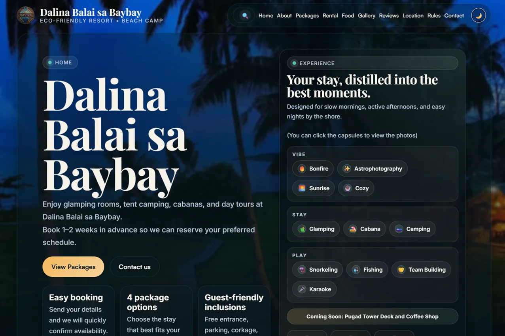
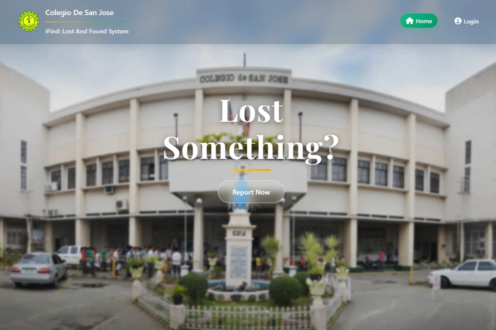
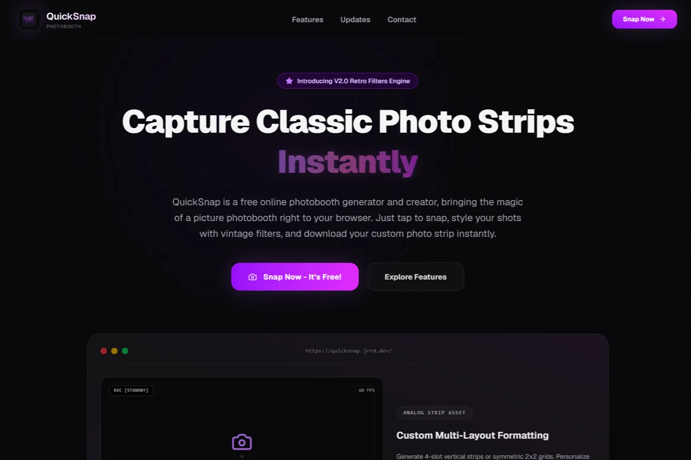
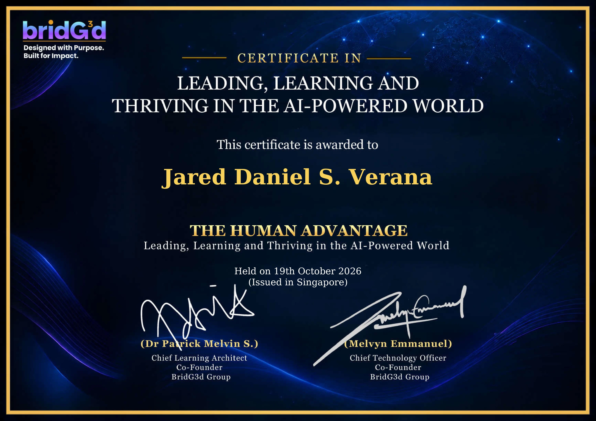
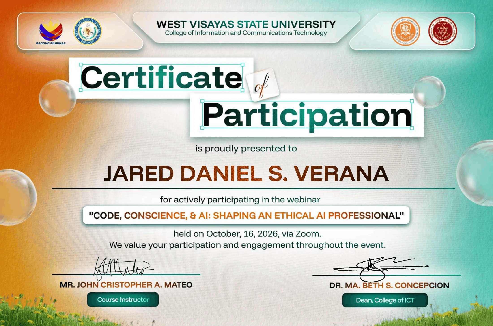
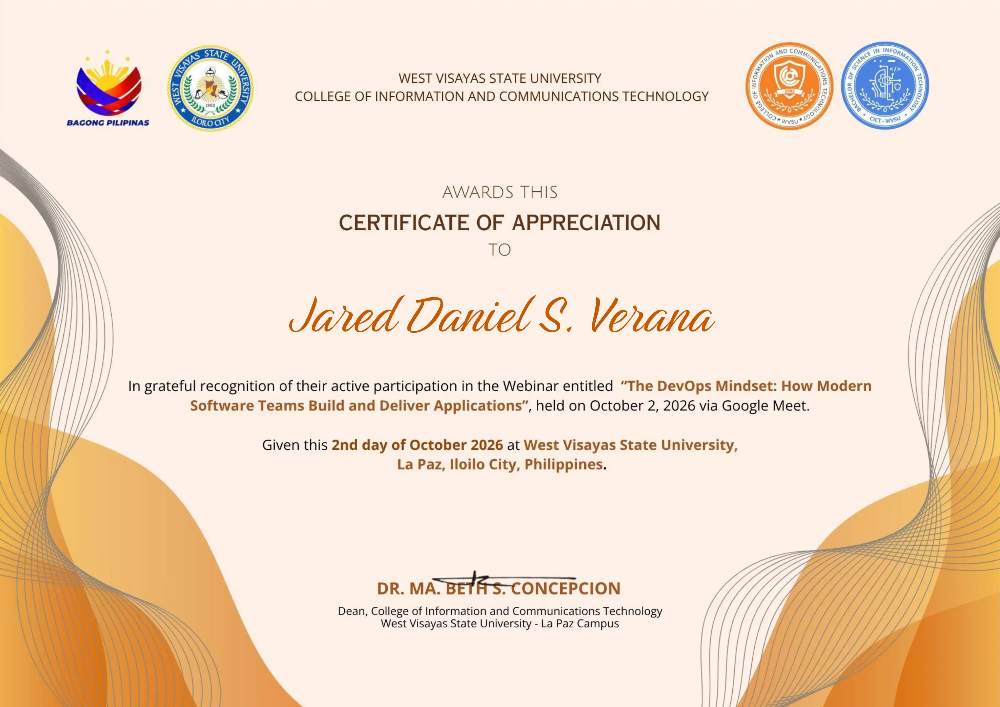

Dalina Balai sa Baybay
A landing page designed to showcase resort accommodations and amenities, directing guests to the resort’s official channel for inquiries.
Visit resort siteICT 102 / Personal portfolio
IT student & web developer
I’m Jared Daniel Verana, an IT student at Iloilo Science and Technology University. I build practical web solutions and client websites that solve real problems through clean code and thoughtful design.
Projects

A landing page designed to showcase resort accommodations and amenities, directing guests to the resort’s official channel for inquiries.
Visit resort site
A lost and found system for Colegio de San Jose. Students and staff can report items, search listings, and follow a claim through to pickup.
Open iFind
A browser photobooth that turns a handful of photos into a printable strip. Pick a layout, try a vintage filter, and save the result.
Open QuickSnapExperience
80 Hours on site
At the hospital, I joined the ICT team on its projects. Working alongside the network administrator taught me how much a team depends on clear communication and following through on an assignment.
Research
Grade 12 / TVL–ICT
Finding a missing item used to mean asking at the school office. Our team built a searchable record of lost and found items. Students and staff could post a photo, look for a match, and make a claim. An administrator checked proof of ownership before pickup.
I was one of four student researchers and worked on development. I planned the core features, designed the reporting forms and navigation, and tested how easily someone could move from a listing to a claim.
Read our research paperOverall score against the ISO/IEC 25010 software quality criteria.
| Participants | Count |
|---|---|
| IT experts | 10 |
| General users | 10 |
| Total | 20 |
Training
| Date | Session & organizer | Takeaway |
|---|---|---|
| The Human Advantage Leading, Learning and Thriving in the AI-Powered World BridG3d Group |
AI can offer a starting point. It still takes a person to judge whether an answer fits the situation and explain that judgment to a team. |
|
| Code, Conscience, & AI Shaping an Ethical AI Professional West Visayas State University, College of Information and Communications Technology |
Before using an AI tool, ask whose information it handles and who could be affected if its output is wrong. |
|
| The DevOps Mindset How Modern Software Teams Build and Deliver Applications West Visayas State University, College of Information and Communications Technology |
Delivering software is a team effort. Feedback from the people running an application helps developers decide what to fix in the next release. |


